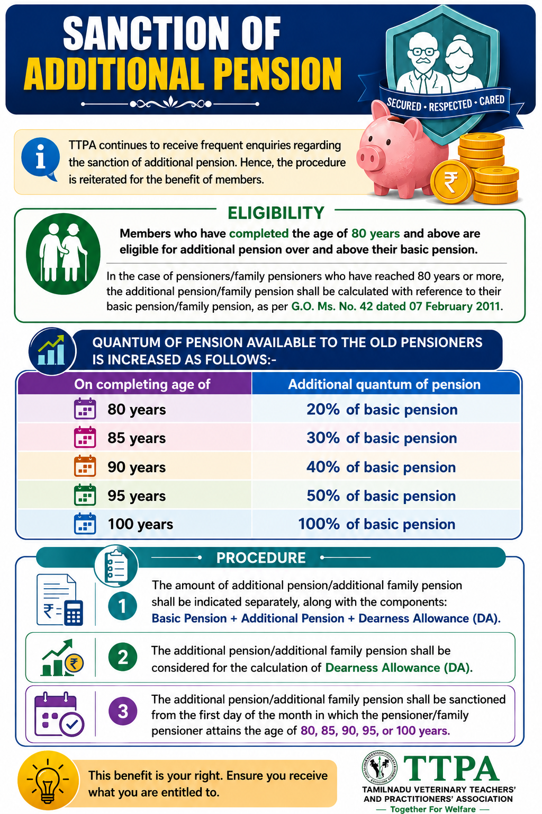

Guidance for pensioners and family pensioners regarding
entitlement to additional pension after completion of
80 years of age.
Additional Pension — Quick Guide

Important:
This infographic is intended as practical guidance for
pensioners and family pensioners. Entitlement and the
applicable quantum of additional pension should be read
together with the relevant Government Orders and latest
instructions issued by the competent authority.